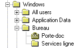

Dans une structure arborescente telle que celle présentée par l'explorateur de Windows, on dit qu'un élément (un répertoire) est expansé si ses sous-niveaux (les sous-répertoires qu'il contient) sont visibles à l'écran. Ainsi, dans le schéma ci-dessous, les répertoires Windows et Bureau sont dits expansés :

A l'inverse, on dit qu'un élément est réduit lorsque ses sous-niveaux ne sont pas affichés. Ainsi, dans le même schéma, les répertoires All users et Application Data sont dits réduits.
L'utilisateur de l'explorateur peut cliquer sur le signe + en regard d'un répertoire (ou sélectionner la ligne correspondante et taper la touche +) pour l'expanser et afficher ses sous-répertoires. Il peut aussi le réduire en cliquant sur le signe – (ou en tapant la touche – après sélection de la ligne).
Le schéma montre 1 répertoire racine (Windows) et 2 niveaux de sous-répertoires (par exemple Bureau et Services ligne) mais il est bien entendu possible d'avoir plusieurs racines et de nombreux sous-niveaux en cascade.
Le principe de fonctionnement d'un objet arbre est identique (avec une limite de 99 niveaux en cascade).
Gestion de l'arborescence
Pour définir et gérer cette arborescence, on associe à chaque élément de l'arbre une variable de contrôle structurée.
Même si vous faites appel à XmeListConsultDefault, votre programme doit au moins initialiser cette variable pour chaque élément, au moment du remplissage initial de la liste (on se reportera à la rubrique Création d'un élément d'arbre pour savoir comment XmeListConsultDefault initialise la variable de contrôle à l'occasion de la création d'un nouvel élément).
Outre le niveau de l'élément, vous devez choisir son état d'expansion initial, les images bitmap associées à l'élément réduit ou expansé et la méthode de garnissage de la liste (présence initiale de la totalité des éléments ou uniquement des éléments " racine ") :
Choix de l'état d'expansion initial.
La valeur courante du champ Expanse de la variable de contrôle indique si Ywpf doit ou non afficher les sous-niveaux de l'élément (TRUE = élément expansé ; FALSE = élément réduit) à un instant donné.
XmeListConsultDefault met automatiquement ce champ à jour lors des demandes d'expansion ou de réduction faites par l'utilisateur. Toutefois, vous devez choisir au moment du chargement initial de la liste, entre un élément au départ à l'état réduit et un élément au départ à l'état expansé.
Choix de la méthode de garnissage de la liste.
Supposons par exemple que vous vouliez montrer le contenu d'un fichier de nomenclatures ayant une structure arborescente du type " Chapitres " (niveau 1), " Articles " (niveau 2) et " Décompositions d'article " (niveau 3).
Une première solution consiste à charger la totalité du fichier dans la liste : c'est la méthode la plus simple et qui nécessite un minimum de programmation. Elle est toutefois peu réaliste si le fichier considéré est de grande taille car la liste risque d'occuper une place trop importante en mémoire et son temps de remplissage risque d'être assez élevé.
Une deuxième solution consiste à ne garnir INITIALEMENT la liste qu'avec les chapitres (les éléments de premier niveau). Lorsque l'utilisateur voudra consulter le contenu d'un chapitre, il demandera son expansion et c'est seulement à CE moment que vous compléterez la liste avec les articles (les éléments de deuxième niveau) de CE chapitre (et uniquement de celui-ci). De même, lorsque l'utilisateur demandera l'expansion d'un article, vous compléterez la liste avec la décomposition (les éléments de troisième niveau) de CET article uniquement. Cette méthode est un peu plus compliquée à programmer mais elle minimise les temps de chargement et l'occupation mémoire.
Voyons pratiquement comment procéder pour mettre en œuvre cette deuxième méthode :
1. A la création des éléments de niveau 1 en liste, initialisez le champ Expanse de la variable de contrôle à FALSE (élément réduit) et le champ SousNiveau à TRUE. Ce deuxième drapeau signale à Ywpf que l'élément a des sous-niveaux MAIS que ceux-ci ne sont pas encore présents en liste ; ainsi, Ywpf affichera le + indiquant que l'élément est réduit et comporte des sous-niveaux, même si ce n'est pas " physiquement " le cas.
2. Lorsqu'une demande d'expansion est faite par l'utilisateur, XmeListConsultDefault appelle votre programme pour vous permettre de compléter la liste avant son réaffichage. Plus exactement, XmeListConsultDefault fait appel à la procédure nommée conventionnellement DefProcExpanser.
3. Il ne reste plus qu'à programmer cette procédure afin qu'elle réalise la mise à jour de la liste.
Vous trouverez le détail des conditions exactes d'appel à DefProcExpanser par XmeListConsultDefault, ainsi qu'un exemple programmé, à la rubrique consacrée à DefProcExpanser.
Choix des images bitmap.
Deux images bitmap sont associées à chaque élément, l'une le représentant à l'état réduit, l'autre à l'état expansé. Si les champs de la variable de contrôle correspondants (BitmapRed et BitmapExp) sont renseignés, l'une d'elle apparaîtra en regard de l'élément, dans la colonne du tableau affichant l'arborescence. On pourra donc :
– Si l'arbre présente des éléments de différentes natures, afficher une image spécifique à chacune d'elle (par exemple, une image pour représenter les articles et une autre pour représenter les décompositions d'article).
– Si l'on veut différencier visuellement un élément réduit d'un élément expansé, afficher une image différente suivant son état (par exemple, comme dans certaines aides Windows, un livre fermé pour un niveau réduit et un livre ouvert pour un niveau expansé).
Reportez-vous à la rubrique Création d'un élément d'arbre pour savoir comment XmeListConsultDefault initialise ces champs à l'occasion de la création d'un nouvel élément.